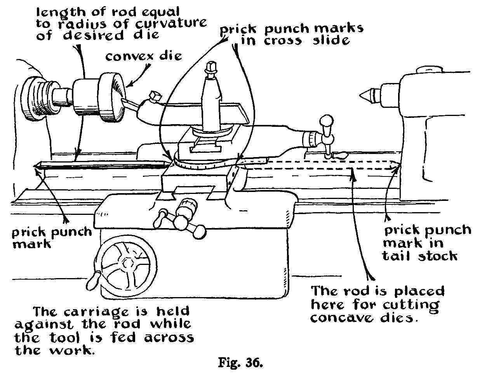
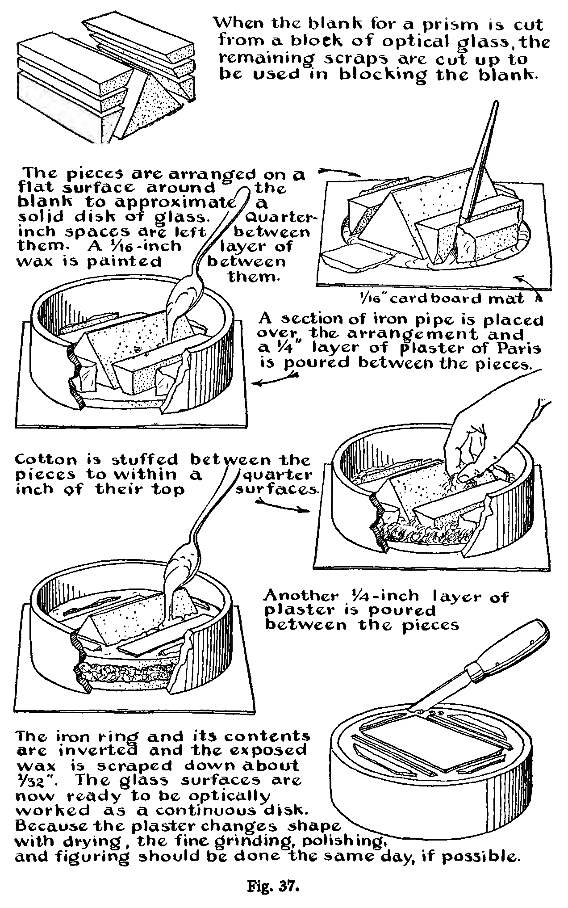
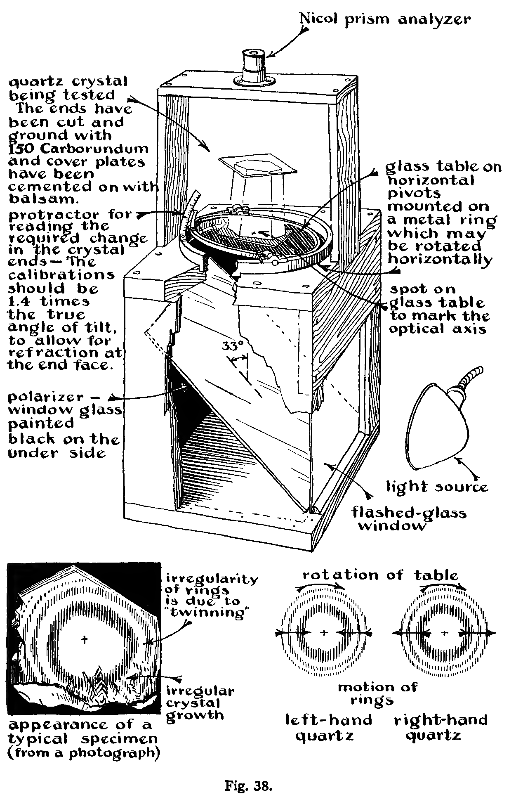
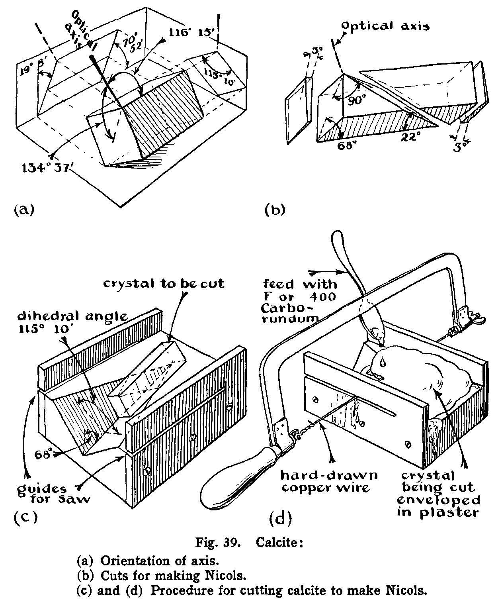
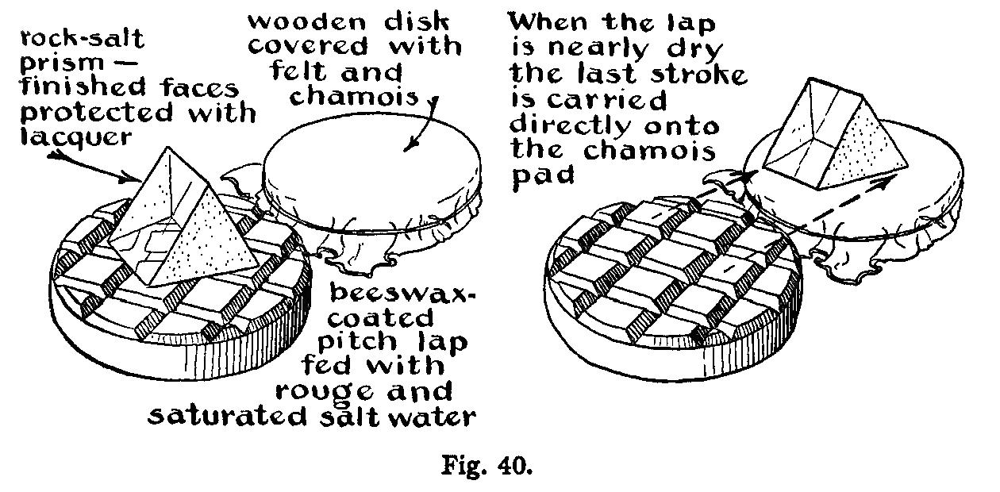
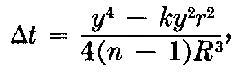
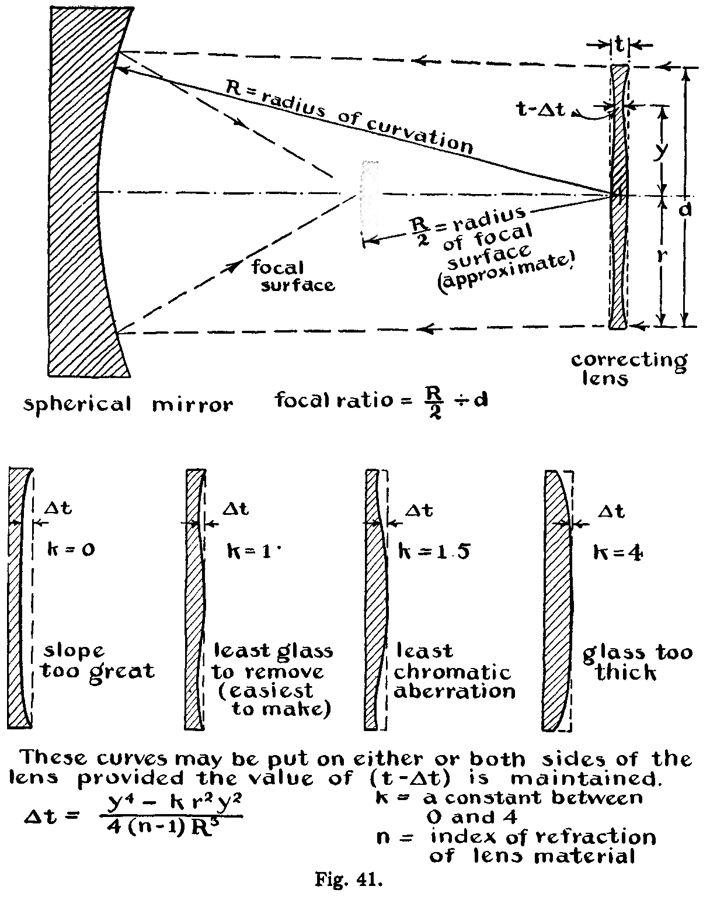

In the more complicated testing setups shown in Figs. 28 and 29 it is often quite difficult to get the mirrors or lenses lined up. The appearance of coma in the eyepiece image, however, can be used to advantage for this. The coma of a system not properly lined up is quite strong and indicates clearly in what direction the mirrors are to be adjusted to get round images.
Some opticians put two white threads at right angles to each other across the face of one of the mirrors. When these threads and all of the secondary images of them viewed from the focus appear symmetrical, the system is in alignment.
As we have already pointed out, the optician's task is defined as the generation of accurate surfaces on mirrors, lenses, prisms, and so forth, which possess a high polish. This is ordinarily done by hand or with the modified Draper machine, as described before. Or it may be done with a high-speed hand-lever machine in the manner described below. The procedure with a modified Draper machine or by hand is slow, but it yields the most accurate results. The modified Draper machine illustrated in Fig. 10 uses a single crank and allows for counterbalancing of the tool, automatic control of the tool, slow smooth stroking, and easy placement of the work. In contrast with this, the hand-lever machine shown in Fig. 35 features high speed and simplicity. The spindle is run at about 100 to 600 r.p.m. Naturally, the heat thus generated, as well as the high speeds of cutting, makes work of the highest precision impossible.
The tool used with the hand-lever machine may be attached to a high-speed spindle as shown in Fig. 35, or the work may be attached with wax to the spindle and the tool applied above. In the former case, a socket for the pivot point of the hand lever is waxed to the work with a mixture of 2 parts coal-tar pitch to 1 part sieved wood ashes. When the tool is applied above, the socket is turned in the back of it. The preliminary grinding may be accomplished on the hand-lever machine with a sub-diameter ring tool of iron, as with the Draper machine. When this ring tool is moved back and forth across the center of the spinning work with a short stroke so that there is no overhang of the tool, the surface is made concave. A long stroke with overhang gives a convex surface. The tool is pivoted and allowed to spin freely, and 90 Carborundum with water is fed on it to accomplish the grinding. The growth of the curve in the work is measured with templates. These are usually cut on a lathe from a thin sheet of brass or bronze. 
The final grinding is done on the hand-lever machine with a spherical brass tool of the same diameter as the work. The spherical tool is made as follows: A brass male and female part are turned on the lathe to the same curvature in the manner illustrated by Fig. 36. These are then lapped together with Carborundum to generate complementary spherical surfaces. If a lathe is not available, they may be separately ground with the hand-lever machine to an approximate fit with a third metal ring tool and then lapped together. It is important to cut a cavity in the center of the one to be used as the grinding tool. The cavity should have a diameter of about one twentieth of the tool diameter.
After the proper curve is approached in the work by grinding with the ring tool, the spherical brass tool is substituted, and the final grinding is carried out with 90, F, and 600 Carborundum and 302J emery. During the grinding process the offset of the tool in respect to the work should never be so great that the tool and the work rotate in opposite directions.
Polishing is accomplished on the hand-lever machine with rouge on a pitch lap. The brass tool used for grinding may be warmed and coated with a layer of hard pitch or pure beeswax for polishing. While the wax is still warm, it is pressed to the proper shape with the already fine-ground work (wet with soap and glycerin solution) to give a layer of pitch about 1⁄8 to 1⁄4 inch in thickness. As for grinding, this lap is cut away in the center to form a cavity of one twentieth of the tool diameter. Also, the pitch is cut to form annular grooves. These grooves facilitate contact between the pitch and the work. The pitch lap should be frequently trimmed.
If the central cavity removed is too broad, the tendency is to polish the edges first, while if the central cavity is small and pitch is trimmed off the edges of the tool, it will polish the center first. Also, whether the polish progresses faster in the center of the work or near the edge depends on the offset. A little offset favors polishing the edges fast, and a big offset makes the progress of polishing greater in the center. One can easily keep track of the progress of the polishing by shining a strong light on the work and observing the "grayness" produced by the residual grinding pits.
It is difficult to balance all these factors, and in practice one should observe how the polish progresses. If the polish is not progressing satisfactorily, the offset can be altered or the tool trimmed accordingly.
Figuring aspheric lenses on the hand-lever machine is accomplished by polishing with sub-diameter tools and star or ring tools.
Small lenses are aligned on the spindle by tilting them while the blocking wax used to cement them in place is still warm. The spindle is turned slowly, and if an object, preferably a small light source, seen reflected in the surfaces does not describe an eccentric circle as the lens rotates, the alignment is complete.
After being centered on a brass tube mounted in the headstock of the lathe, in the same manner as described above, the work is edged with an iron tool and grits. (See Fig. 6.)
Although we have emphasized the phases of procedure which are important in generating the optical surface, we have not dealt extensively with the orientation of that surface with respect to the general form of the work or with respect to other optical surfaces. These are matters usually managed in an obvious manner. However, in the construction of prisms, especially right-angle prisms and plane parallels, the manner of getting proper relationship between the two flat surfaces involved is not so obvious. A half-hour of polishing on the Draper machine or a few minutes of polish- ing on the spindle machine will usually put enough polish on ground surfaces to allow their relationship to be tested on a spectrometer table or with other optical tests. Right-angle prisms are tested by employing their property of deviating a light beam exactly 180°. This test is sensitive to about 1 minute of angle when it is made with the naked eye, and if it is made using a telescope equipped with a Gauss eyepiece, it is sensitive to about 1 second of angle.
Plane parallels are ground to be flat and parallel to about 1⁄20000 of an inch. Good micrometers are used to test the glass for parallelism to this accuracy. The final optical precision is obtained by figuring. The test using Haidinger's fringes, described before, is used to guide the figuring. Plane parallels are usually made with circular faces to be cut up later into rectangles if necessary.
Inasmuch as round glass surfaces are more easily figured than square or rectangular ones, it is advisable to mount a prism blank in a metal ring as shown in Fig. 37, together with auxiliary glasses having the same coefficient of expansion, to make up a circular array of glass surfaces. This circular array is held in the metal ring with plaster of Paris, and the ensemble is then worked as a single disk of glass. The parts may be immersed in a single thick layer of plaster, but it is best to imbed them in a double layer of plaster as shown in Fig. 37. A mixture of 3 parts plaster to 2 parts water is used. This gives an almost nonshrinking, although not very strong, cement. The work may be coated first with a thin layer of beeswax in cases where free lime or moisture in the plaster might attack the glass. After the plaster of Paris sets, its surface is shellacked to make it impervious to water. The grinding and figuring should be finished in one day. Otherwise, owing to "aging" of the plaster, the central and auxiliary surfaces will not maintain satisfactory alignment.
When optical surfaces are generated on crystals, it is frequently required to orient the surfaces precisely with respect to the crystal axes. Fig. 38 illustrates the manner in which the optical axis of quartz is precisely located. The crystal is cut at each end with the mud or diamond saw, the cuts being made roughly perpendicular to the optical axis. These parallel saw cuts are then ground with the abrasives to grade 150 Carborundum and "artificially polished" by cementing cover glasses to the ground ends with balsam. Polarized light is used to determine the optical axis in the manner illustrated in the figure. The system of rings noted through the analyzer will remain stationary when the crystal is rotated about a vertical axis if the cuts are perpendicular to the optical axis. If the rings "wobble" as the crystal is rotated, the axis of rotation is to be tilted by means of the gimbals provided (or with wedges) until the fringes are stationary during rotation. The ends are then recut, taking account of refraction (see note on the figure), and the plate retested to check the result.
When properly cut quartz crystal is rotated in a clockwise direction, the rings close in toward the center if the crystal is left-handed quartz and move out if it is right-handed quartz.
An irregular piece of quartz can be roughly examined for striae by immersion in a tank filled with a solution composed of 80 per cent ethyl cinnamate and 20 per cent xylol (by volume). Iron oxide surface stains may be removed from the crystal by washing in oxalic acid solution.
The orientation of the principal axis of calcite is shown at the top of Fig. 39. To cut calcite for making Nicols, the crystal is oriented and mounted in a wooden form having the cutting plane defined by a preliminary saw cut. The cut through the crystal is made by hand by sawing through both plaster and crystal with a hard-drawn copper wire mounted in a scroll-saw frame and charged with Carborundum.
Quartz is the optician's favorite medium. Both the fused and the crystal material are ground and polished by the same procedure as glass.
Calcite crystals, especially large ones, are expensive, and in addition they are soft and easily fractured. Accordingly calcite is always worked by hand with very light pressures. All but the smaller Carborundum grains tend to produce fractures in calcite, and therefore the series F-400-600 Carborundum and 302 1⁄2 and 303 1⁄2 emery is recommended for working it. If prisms with very thin edges are to be made, 400 Carborundum is used as the coarsest grit. A beeswax-coated pitch lap is satisfactory for polishing and figuring calcite. For figuring, calcite should be blocked with calcite of the same crystal orientation.
Rock salt is polished and figured on a hard-pitch tool pressed with a glass pressing lap.[12] The desired figure is obtained with an overcorrected pressing lap, as the figure obtained on this material is usually convex with respect to that established in the tool by the pressing lap. For example, in making flats, one would use a slightly concave pressing lap (1⁄1000 of an inch in a 4-inch disk or 60-foot radius of curvature). Rouge in saturated salt solution is used to start the polishing. Fig. 40 shows the arrangement of the pitch tool which is placed below the work, and a chamois skin used for drying the work. The work is rubbed against the lap until the rouge is almost dry. It is then kept moist with the breath for the final strokes and is slipped off the tool onto the chamois to be dried. This technique should be practiced on test pieces before big work is under-taken. The first face of a prism or lens is lacquered or waxed to prevent attacks by moisture while the second face is being worked. The pitch tool is coated with beeswax. Beeswax is useful for even softer materials than rock salt, such as potassium chloride, potassium bromide, and even potassium iodide.
Perhaps the most important metal in optics is speculum metal. It is very hard, exhibits a conchoidal fracture like glass, and is worked by the same procedure, being ground with the same sequence of grits. The polishing tool should have narrow facets. It is often advantageous to do the final figuring of speculum surfaces with the metal face turned down to avoid scratching.
Stellite is also worked like glass except that longer grinding periods (two to three times that for glass) are required. Ordinarily pitch polishing tools are used with rouge or chromium oxide as polishing agent. One should try to "hold" the figure from the grinding stages until polishing is completed.
Hard steel is worked in the same manner as glass.
In grinding soft steel, a still softer metal, such as copper or lead, is used as a grinding tool.
Soft steel and hard-drawn copper are difficult to polish, but they can often be managed with a polishing tool coated with a mixture of paraffin and oxide of tin. As much oxide is added to the molten paraffin as it will take without crumbling. This mixture is applied hot with a swab to the pitch polishing lap.
If a metal tends to etch or discolor during polishing, it is advisable to try carbon as a polishing agent (charcoal ground in a ball mill and washed). Chromium oxide will often give a bright polish in cases where rouge would discolor the metal.
The very soft metals - silver, soft copper, gold, and so forth - cannot be easily surfaced by the ordinary optical methods. They become charged with the grits and refuse to grind. Silver circles are brightened by rubbing moistened cigarette ashes with the thumb back and forth in a direction parallel to the engraved lines.
The Schmidt camera is an image-forming device which combines features not possessed by any lens system, and, while it has some disadvantages, it may well prove to be a natural solution to many more instrumental problems than those to which it has already been applied.[13]
The camera has had considerable application in astronomy, particularly meteor photography and survey work of large star fields. It has been applied to stellar spectrographs, and it is believed that it will have other applications in research where extreme speed, a long spectral range, and a large field are important. Two awkward features of the Schmidt camera are its curved focal plane and the inaccessibility of the plate or film holder. The curvature of the focal surface is R/2, where R is the radius of curvature of the primary mirror. The focal surface is convex toward the sphere.
The construction of a Schmidt camera is so difficult that it should not be undertaken except by one with considerable optical experience. The following is intended primarily as a description of it.
The scheme of the instrument is shown at the top of Fig. 41. It consists of a spherical primary mirror and a Schmidt lens, which corrects the primary mirror for spherical aberration. The lens is located at the center of curvature of the spherical mirror, and its deviation from flatness is so small that no great error of achromatism is produced by the dispersion of the index of refraction of the glass from which it is made. However, as an optical figuring job this deviation is great enough to make the construction of the lens difficult. This is because the curve deviates as much from any sphere as it does from flatness, so that all the construction difficulties of making aspheric surfaces are encountered.
The Schmidt lens may have several contours, as illustrated in Fig. 41. The variation of thickness may be obtained by putting the curves entirely on one side of the plate or on both sides. The variation in the thickness At of a plate of diameter 2r, expressed as a function of the distance from the center of the plate y and the radius of curvature R of the primary spherical mirror, can be represented by any one of the family of curves:
where k may have any value between and 4.
The characteristics of some of the curves are as follows: Where k = 4, the lens is too thick; where k = 0, the slope at the edge is so steep that the construction difficulties are great; where k = 1.5, the achromatism is best; where k = 1, the slopes are moderate, the color characteristics are good, and the curve can be put half on one side of the plate and half on the other. In the case where k = 1, the curve requires the least glass to be removed.
The Schmidt lens is made of Uviol glass or even fused quartz if the camera is to be used for photography in the ultraviolet spectrum. The Schmidt camera has been made to numerical apertures as fast as f/O.6. Such a camera is much faster than a camera using a lens of corresponding aperture because there are fewer glass surfaces to penetrate, and the light losses are correspondingly less.
The Schmidt plate is ground and polished with a special ring tool. Each of the glass facets for grinding or pitch facets for polishing is mounted on a separate spring as in Fig. 42. This or a similar flexible construction of a tool is used since considerable deformability is required of it.
The curve k = 1 requires the thickness at the center to be the same as that at the edge. This is indicated when a straightedge laid across the work will touch the center but not rock on it. The minimum thickness of the plate at y = 0.707 r is determined from the thickness at the edge, and the value of At calculated from the equation. The intermediary zone is depressed by grinding until this minimum thickness corresponds with that required as measured by a micrometer.
Figuring may be guided by several testing schemes shown at the bottom of Fig. 28.
[1] Ingalls, Albert G., editor, Amateur Telescope Making, page 74. New York: Scientific American Publishing Company, 1935.
[2]For a more comprehensive treatment of the theory of polishing from a different point of view, see the following:
Lord Rayleigh, Proc. Opt. Convention, No. 1, page 73 (1905); and Scientific Papers, Vol. IV, page 542. Cambridge: The University Press, 1903.
French, J. W., "The Working of Optical Parts," Dictionary of Applied Science, Vol. IV, page 326. London: The Macmillan Company, 1923.
Finch, G. I., "The Beilby Layer," Science Progress, SI, 609 (1937).
[3]I am indebted to Mr. D. O. Hendrix for the procedures presented here.
[4]Ingalls, Albert G., editor, Amateur Telescope Making, Advanced. New York: Scientific American Publishing Company, 1937.
[5]Diamond glass cutters may be obtained from the Standard Diamond Tool Corporation, 64 West 48th Street, New York City. This company also sharpens diamond glass cutters.
[6]Topler, A., Pogg. Ann., 131, 33, 180 (1867). Wood, R. W., Physical Optics, page 93. New York: The Macmillan Company, 1934.
[7]Several layers of the thin metal sheet are laid together on an anvil, and a sharp needle is driven halfway through them. They are then separated and the one with a suitable hole is selected. Each pierced sheet has a small hole of a different size and all the holes are round.
[8]See Amateur Telescope Making, Advanced, article on Foucault's shadows by E. Gaviola, page 76.
[9]Gaviola, E., J.O.S.A., 26, 163 (1936).
[10]Anderson, J. A., and Porter, R. W., Astrophys. J., 70, 175 (1929).
[11]For further treatment of optical testing, see articles contained in Amateur Telescope Making, Advanced, and references cited therein.
[12]Brashear, John A., Proc. of Am. Assn. for Adv. of Science, 38, 166 (1885).
[13]Stromgren, B., "Das Schmidtsche Spiegelteleskop," Vierteljahrschrift der Astronomischen Gesellschaft, 70, 65 (1935). Smiley, C. H., "The Schmidt Camera," Popular Astronomy, 44, 415 (1936).